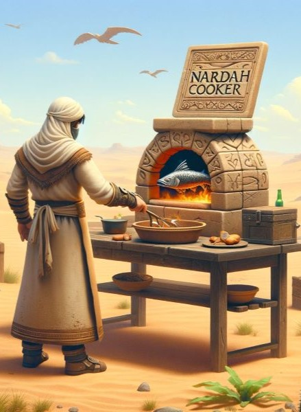

Voor mijn eerste project heb ik een script ontwikkeld dat automatisch voedsel kookt in een game, en ik heb dit gerealiseerd met Lua. Dit project kwam voort uit mijn liefde voor gaming en de uitdaging om gameplay-ervaringen te verbeteren. Het script is ontworpen om de kookprocessen in de game te automatiseren, waardoor spelers meer tijd hebben om zich op andere aspecten van het spel te concentreren. Met verschillende instellingen en opties stelt het gebruikers in staat om hun eten te koken. Dit project heeft me niet alleen geholpen mijn programmeervaardigheden in Lua te verbeteren, maar ook mijn creativiteit bij het oplossen van problemen
Nardah cooker
